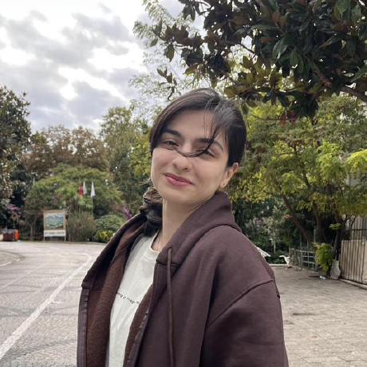

Haniyeh Zahra Budaqi
Mechanical engineer working across spacecraft GNC and embedded firmware.
Which side would you like to see?
Research portfolio
Astrodynamics & spacecraft GNC
Cislunar trajectory design in the Earth–Moon three-body problem, spacecraft attitude dynamics and control, and reinforcement learning for mission operations. Includes publications and teaching.
View research portfolio Embedded portfolioEmbedded software & firmware
Real-time C/C++ firmware on STM32 and ESP32 with FreeRTOS, CAN / SPI / BLE interfaces, and PCB design, from driver code to boards that work on the first run.
View embedded portfolio